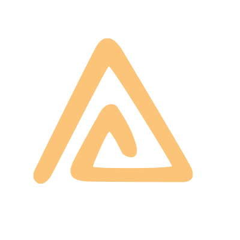

The
King
is a
Wo
man
The Woman King: Sales Edition
Est un évènement annuel organisé autour des directrices commerciales ou directrices des ventes. Il valorise ces femmes, qui avec audace, témérité et résilience assurent la pérennité de l‘entreprise, la disponibilité des ressources pour la rémunération des équipes. Oui, le capitaine du navire c‘est le DG, mais que serait une entreprise sans les ventes ?
The Woman King: Sales Edition
Honore ces femmes qui portent le poids de la couronne parfois au détriment de leur vie sociale et familiale. Les objectifs, les chiffres, les recouvrements, les comités de direction et surtout le stress occupent une large partie de leur quotidien. Chauffeur, primes, commissions, etc...tels sont les nombreux avantages dont elles jouissent, mais que valent-ils dans la balance faceaux sacrifices consentis ?